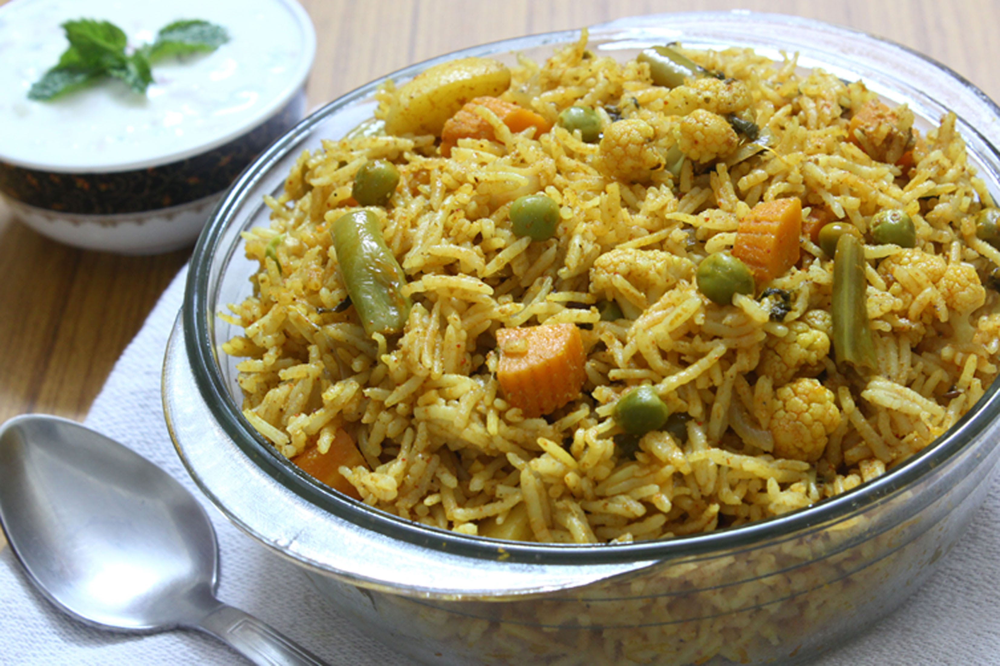

~Vegetable Pulao~
Go To Details

Description:
Vegetable pulao is one of the most popular dishes in India.
Because of the rich flavors and colors in the vegetable pulav, both adults and kids enjoy this delicious dish. In my household, vegetable pulao is made almost every week! Usually, vegetable pulao is served with a side of raita (plain yoghurt mixed with onions and herbs) for an extra kick of flavors.
Directions:
- Soak rice in water and keep aside for 15 min.
- Heat a pressure cooker pan and add butter. Fry cloves, cinnamon, cardommom
- Add and saute onions till they become golden brown.
- Add ginger-garlic past and slit green chillies. Fry
- Add in all the veggies, garam masala and fry.
- Pour in water, salt(to taste), and rice.
- Cover the pressure cooker pan with lid and wait for 3 whistles.
- Turn off stove,and give the pulao a nice stir to blend the spices.
- Serve pulao hot (or when cooled) and ENJOY!
Nutrition Info:
| Serving Size |
Fat Per Serving(g) |
Protein Per Serving(g) |
Carbs Per Serving(g) |
Total Carbs Per Serving(cal) |
| 1 cup |
3.4 |
4.2 |
37 |
200 |